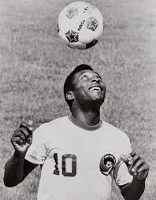
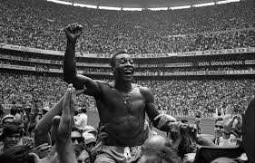

Edson Arantes do Nascimento (Brazilian Portuguese: [ˈɛdsõ aˈɾɐ̃tʃiz du nasiˈmẽtu]; 23 October 1940 – 29 December 2022), better known by his nickname Pelé (Portuguese pronunciation: [peˈlɛ]), was a Brazilian professional footballer who played as a forward. Widely regarded as one of the greatest players of all time, he was among the most successful and popular sports figures of the 20th century.[2][3] In 1999, he was named Athlete of the Century by the International Olympic Committee and was included in the Time list of the 100 most important people of the 20th century. In 2000, Pelé was voted World Player of the Century by the International Federation of Football History & Statistics (IFFHS) and was one of the two joint winners of the FIFA Player of the Century. His 1,279 goals in 1,363 games, which includes friendlies, is recognised as a Guinness World Record.[4]
Pelé's first international match was a 2–1 defeat against Argentina on 7 July 1957 at the Maracanã.[59][60] In that match, he scored his first goal for Brazil aged 16 years and nine months, and he remains the youngest goalscorer for his country.[61][62]1959 South American Championship Pelé also played in the South American Championship. In the 1959 competition he was named best player of the tournament and was the top scorer with eight goals, as Brazil came second despite being unbeaten in the tournament.[68][72] He scored in five of Brazil's six games, including two goals against Chile and a hat-trick against Paraguay.[73]
 Address: Rua Paçuaré, 1061 - Cosmos, Rio de Janeiro - RJ, 23058-230, Brazil